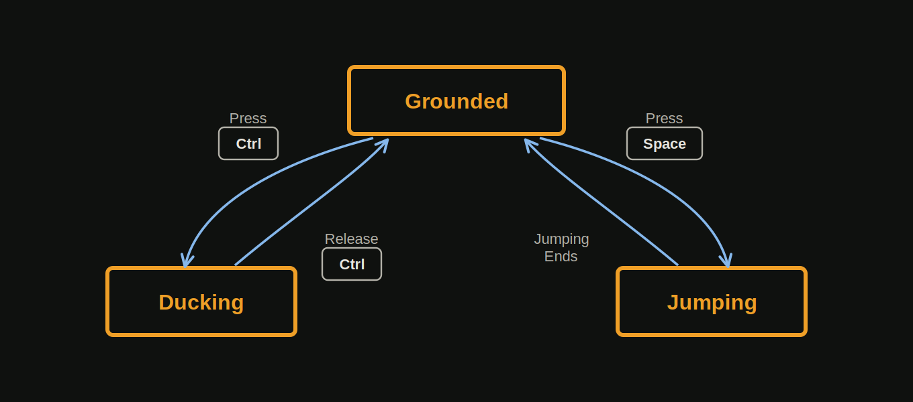

State Pattern
Why do we need this pattern and when to use it? In order to show you we are first going to see some bad code, and then we are going to rewrite the code with the state pattern.
Bad Code
Imagine that we are working on a third person stealth game, and we need to implement the character and make him respond to user input. He can jump and duck.
public class Character
{
private bool isGrounded;
private bool isDucking;
private bool isJumping;
public void Update()
{
// Update the player depending on the private fields
}
public void HandleInput(Input input)
{
if (input == Input.PRESS_SPACE)
{
if (this.isGrounded && !this.isDucking)
{
this.isJumping = true;
this.isGrounded = false;
}
}
else if (input == Input.PRESS_CTRL)
{
if (this.isGrounded)
{
this.isDucking = true;
}
}
else if (input == Input.RELEASE_CTRL)
{
if (this.isDucking)
{
this.isDucking = false;
}
}
}
}At first glance this code is not written badly. When we press “Space” the character can
jump only if he is grounded and not ducking. If we press “Ctrl” the character can duck
only if he is grounded, not when he is jumping, and so on, and so on. Now imagine that the character
can also swim, or even skydive like in Just Cause. Maybe he can also enter different vehicles (cars,
jet planes). For all these states of the character we need different booleans —
isSwimming, isSkydiving, isInCar, isInJetPlane.
In all of these states the character has different input handling. If he is grounded for example and
we press “Space” he will jump, but what if he is swimming, or he is in a car and we
press “Space” again. Maybe while swimming the character will ascent, and while he is in
a car he will activate the brakes of the car. Now imagine that the character can do many other
things. Soon our HandleInput(Input input) and Update() methods will be a
nightmare to extend and maintain. In such cases the use of state machines can save our lives.
Finite State Machines
Finite State Machines are very simple. They only sound fancy. We can visualize our current character logic like that.

- The machine has a fixed set of states — Grounded, Ducking and Jumping in our case
- Only one state can be active at a time
- We can send input to the machine — in our case this is raw input from the user
- Each state has a set of transitions — each associated with an input and pointing to another state
Good Code - The State Pattern
Basically, all we need to do is to implement a finite state machine in code. How do we do that? If you are doing it for the first time — it's hard. It's actually very easy. Once you see how to do it, you won't forget it.
Let us first start by implementing an interface for all states. Lets name it ICharacterState.
public interface ICharacterState
{
void OnEnter(Character character);
void OnExit(Character character);
void ToState(Character character, ICharacterState targetState);
void Update(Character character);
void HandleInput(Character character, Input input);
}OnEnter and OnExit are very useful, because we can execute some code when
the character enters/exits a specific state — play a sound, change the animation of the
character, etc. These methods will be called automatically when we make a call to the
ToState method. In order to make it automated we need a base abstract class for all of
the states. Lets name it CharacterStateBase. But first lets change our
Character class like this.
public class Character
{
private ICharacterState state;
public ICharacterState State
{
get
{
return this.state;
}
set
{
this.state = value;
}
}
public void Update()
{
this.State.Update(this);
}
public void HandleInput(Input input)
{
this.State.HandleInput(this, input);
}
// Other code
}The character has a state. In his Update() method we update his current state. Every
state also has a different input handling. In the HandleInput(Input input) method we
just make a call to the HandleInput(Character character, Input input) method of the
current state.
And now the CharacterStateBase class.
public abstract class CharacterStateBase : ICharacterState
{
public virtual void OnEnter(Character character) { }
public virtual void OnExit(Character character) { }
public virtual void ToState(Character character, ICharacterState targetState)
{
character.State.OnExit(character);
character.State = targetState;
character.State.OnEnter(character);
}
public abstract void Update(Character character);
public abstract void HandleInput(Character character, Input input);
}All that is left is to implement the “Grounded”, “Jumping” and “Ducking” states.
public class GroundedCharacterState : CharacterStateBase
{
// Some code
public override void HandleInput(Character character, Input input)
{
if (input == Input.PRESS_SPACE)
{
this.ToState(character, STATE_JUMPING);
}
else if (input == Input.PRESS_CTRL)
{
this.ToState(character, STATE_DUCKING);
}
// More code
}
public override void Update(Character character)
{
// Some code
}
}public class JumpingCharacterState : CharacterStateBase
{
// Some code
public override void HandleInput(Character character, Input input)
{
// Some code
}
public override void Update(Character character)
{
if (character.IsGrounded())
{
this.ToState(character, STATE_GROUNDED);
}
// More code
}
}public class DuckingCharacterState : CharacterStateBase
{
// Some code
public override void HandleInput(Character character, Input input)
{
if (input == Input.RELEASE_CTRL)
{
this.ToState(character, STATE_GROUNDED);
}
// More code
}
public override void Update(Character character)
{
// Some code
}
}The STATE_GROUNDED, STATE_JUMPING and STATE_DUCKING are just
references to instances of GroundedCharacterState, JumpingCharacterState
and DuckingCharacterState. You can create them anywhere you want. I personally like to
create static readonly instances in the CharacterStateBase class.
I personally love this pattern. It's very easy to extend the behavior of the character, we just need to create a bunch of different states. Once created we don't touch them anymore. But as good as it is, there are also problems.
Concurrent State Machines
Lets imagine that the character is running. He is in a running state. But can he run and shoot at the same time? The problem is that only one state can be active at a time. The character can't run and shoot at the same time, but we want him to be able to do so. One solution is to create a state that combines both the running and the shooting states. That however is not a very good solution. Imagine that the character can shoot while jumping, ducking, walking. Even worse — the character can shoot with different types of weapons (pistols, rifles, grenade launchers). The input handling for these weapons is a little different from one another. If we are to create that many combined states, we will end up overkilling the architecture of our code. A better solution is to create a secondary state, that can be updated separately from the main state. The character class will look like this.
public class Character
{
private ICharacterState state;
private ICharacterState equipmentState;
public void Update()
{
this.State.Update(this);
this.EquipmentState.Update(this);
}
public void HandleInput(Input input)
{
this.State.HandleInput(this, input);
this.EquipmentState.HandleInput(this, input);
}
// Other code
}When to Use
There is not a strict rule when to use it. This applies to all patterns in general. You need to ask yourself three questions:
- Do you have an entity whose behavior changes based on some internal state?
- Can that state be rigidly divided into one of a relatively small number of distinct options?
- Does the entity respond to a series of inputs or events over time?
If the answer to all questions is a “YES” then you might consider using this pattern.
I've used it for simple AI behaviors. You can actually check this Video Tutorial from Unity Technologies. A guy shows how to implement a basic state machine for AI. However if you want to create a more complex AI, I advise you to use Behavior Trees. I've actually never used them myself, but I know that they are the right way to do more advanced AI.
I've also used the state pattern when I was implementing the UI in the main menu of a certain game. I had a bunch of screens and you can go from one screen to another, based on some user input. Each state is a different UI Screen. Based on the user input I just make transitions between the screens.